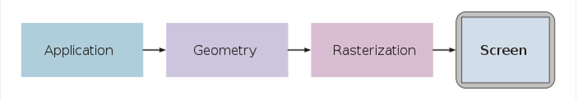

渲染 + 管線：先看清這條路的長相
- 一句話說出「渲染」把什麼變成什麼
- 記得渲染是一連串固定順序的階段，叫「管線」
- 知道你要改的渲染程式碼，幾乎都住在兩個階段：Vertex Shader 和 Fragment Shader
先看結果

中間發生的事，就是這整套課程要帶你走過的渲染管線。 你不用先懂任何數學 —— 這堂課只要你認得這條路的長相。
渲染 = 3D 進、2D 出
Rendering（渲染）就一件事：輸入 3D 模型（Mesh），輸出一張 2D 圖。
Mesh 是什麼？空間中一個點叫 Vertex（頂點），3 個點圍成一個 Triangle（三角形），很多三角形拼出模型外形 —— 那就是 Mesh。（細節下一課再看。）

這條路叫「管線」，資料一棒接一棒
從 3D 到 2D 不是一步到位，而是資料依序流過幾個階段，每個階段做一件事、交給下一棒。 這就是繪圖管線（Graphics Pipeline）：
（對應 筆記 的 Application → Geometry → Rasterization → Fragment Shading → Output Merging。之後每一課，都是在拆開這條線上的一個階段。）
重點：其中兩個階段，是你能寫程式的地方
這 5 個階段裡，大部分是固定管線（fixed-function）—— GPU 照硬體既定方式做， 你只能開關設定，不能改演算法。
但有兩個階段跑的是你寫的小程式，叫 Shader（著色器）：
- Vertex Shader —— 每個頂點跑一次（決定頂點最後落在畫面哪裡）
- Fragment Shader —— 每個片段／像素跑一次（決定那個點是什麼顏色）
有了這兩個 shader，整條管線就從早期的 Fixed Function Pipeline（固定管線） 進化成 Programmable Pipeline（可程式化管線）。
隨堂測驗
1. Fixed Function Pipeline 和 Programmable Pipeline 最主要的差別是？
2. Vertex Shader 負責什麼？
3. Fragment Shader 負責什麼？
原始資料 / 延伸閱讀
- 本課改寫自 遊戲繪圖_00_電腦圖學.md + 遊戲繪圖_01_GPU繪圖管線.md
- 最溫和的入門（推薦先讀這篇）：Scratchapixel — Gentle Introduction to Computer Graphics Programming
- 想看管線全貌的好文：A Trip Down The Graphics Pipeline
任何一段看不懂，或想更深入，直接問你的教學 agent（/teach）—— 它是你的老師。